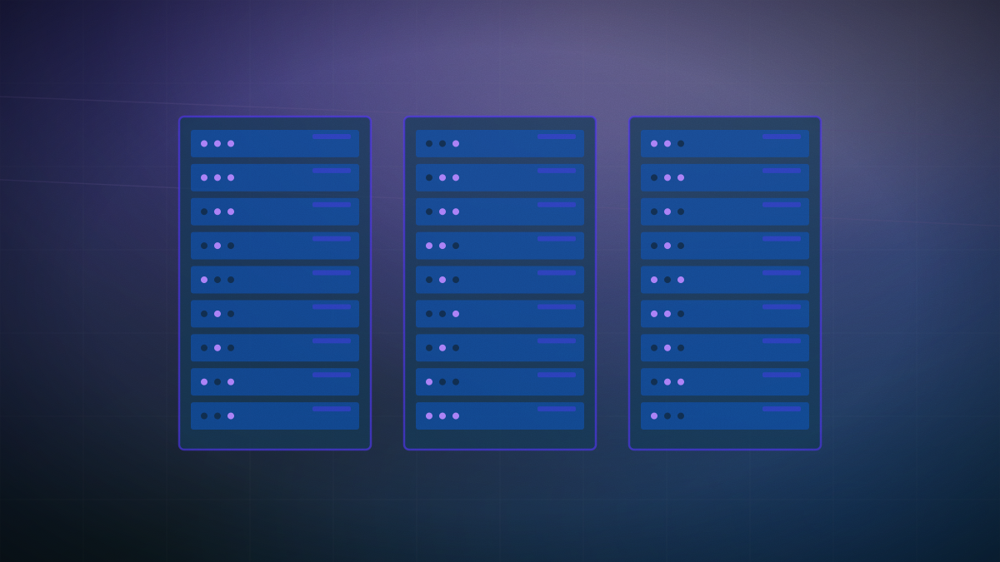

Qualcomm partners with Amazon on custom AI silicon in $60 billion opportunity
A multi-generational custom AI inference silicon agreement grants Amazon a potential $4 billion warrant stake in Qualcomm.

Original cover art, generated for this story. THE VISSION does not republish third-party press imagery.
- Qualcomm and Amazon Web Services have announced a landmark multi-generational strategic partnership to develop customized AI inference silicon.
- Amazon has received a warrant to acquire up to 25 million Qualcomm shares at $161.26 per share, representing a potential $4 billion equity stake.
- The agreement represents a potential commercial opportunity for Qualcomm of up to $60 billion over the multi-generational life of the deal.
Qualcomm and Amazon Web Services (AWS) have announced a landmark, multi-generational strategic collaboration to co-develop customized AI inference silicon and high-speed optical interconnects for next-generation hyperscale data centers. The massive agreement marks a significant turning point in the AI hardware landscape as cloud providers seek alternatives to NVIDIA’s market-dominant GPUs. Under the terms of the deal, Qualcomm will manufacture custom logic compute dies that interface directly with Amazon’s memory systems, optimizing performance for power-constrained inference workloads.
To cement the commercial relationship, Qualcomm has issued Amazon a stock warrant to acquire up to 25 million shares of QCOM common stock at an exercise price of $161.26 per share, representing a potential $4 billion equity stake in the chipmaker. The vesting of the warrant is tied to Amazon's volume purchase milestones of Qualcomm's data center hardware over the life of the agreement. Financial analysts project the overall partnership represents a potential revenue opportunity of up to $60 billion for Qualcomm, which anticipates generating its first commercial revenues from the AWS deal as early as the December quarter of 2026.
The technological scope of the partnership includes advanced SerDes and optical digital signal processors (DSPs) reaching transfer speeds of 1.6 terabits per second (1.6T). This high-bandwidth optical connectivity is critical for clustering tens of thousands of custom accelerators into cohesive, low-latency reasoning engines. In return, Qualcomm will expand its internal use of AWS cloud services and the Amazon Bedrock API for its electronic design automation (EDA) processes, utilizing AWS's massive compute clusters to accelerate its future silicon design pipelines.
This deal is the clearest indication that the AI hardware market is shifting from training-compute to high-volume inference-compute, where power efficiency is paramount. By partnering with Qualcomm, AWS is building a custom silicon hedge against NVIDIA’s pricing power. For Qualcomm, this massive partnership validates its diversification strategy away from smartphones, positioning it as a primary infrastructure provider to the world's largest cloud computing platform.